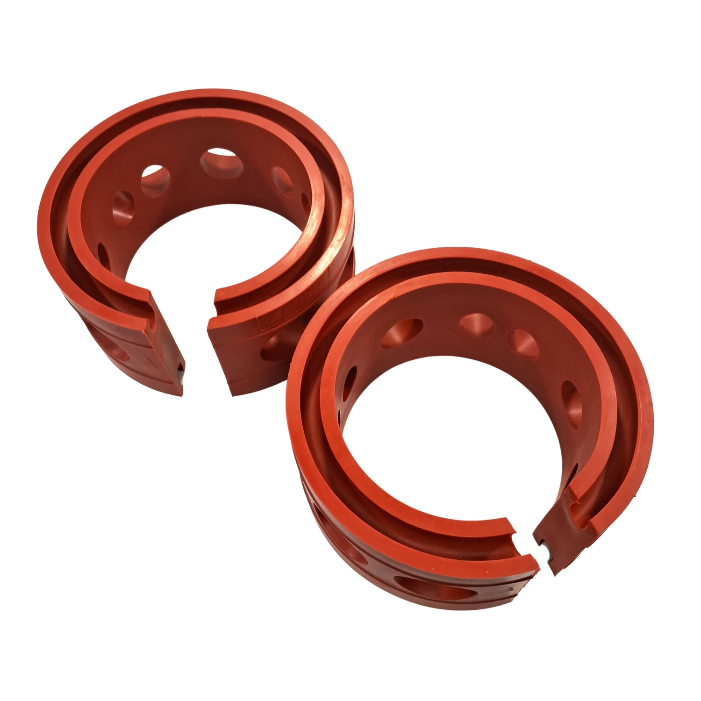

Catálogo técnico de suspensão
Buffer Power
Cushion FOB
Calço amortecedor para mola helicoidal, vendido em par. Consulte a aplicação pelo veículo ou compare as medidas dos seis tipos.

Qual FOB serve no veículo?
Escolha a montadora e o modelo. O ano é opcional e refina o resultado para cada eixo.
Buscar no catálogo
Aplicações
Fotos e medidas por tipo
Compare as medidas e selecione um tipo para ver a peça de perto.
| Tipo | Vão entre elos | Diâmetro do elo | Comprimento total |
|---|
Como medir a mola
Com o veículo em piso plano e as rodas apoiadas no chão, meça o vão livre entre duas espiras vizinhas no ponto de encaixe. Meça também a espessura do arame da mola, que é o diâmetro do elo. Confira as duas medidas no eixo em que o buffer será instalado.
Sem aplicações por veículo na planilha.
Voltar à tabelaO que é o Buffer FOB
O Buffer Power Cushion FOB é um calço de poliuretano que se encaixa entre duas espiras da mola helicoidal. Funciona como um apoio elástico para a mola e é instalado com a suspensão montada.
Como funciona
Quando a roda passa por um buraco ou uma lombada, as espiras da mola se aproximam. O buffer se comprime entre elas e ajuda a suavizar a batida seca quando a suspensão se aproxima do fim de curso. Dependendo do encaixe e da suspensão, esse apoio também pode reduzir ruídos e vibrações e dar mais firmeza em curvas ou com o veículo carregado.
Há tipos para carros de passeio, SUVs, vans e utilitários com mola helicoidal. A escolha depende da medida da mola e do eixo.
Instalação
- Eleve e apoie o veículoUse os pontos de elevação e apoio indicados no manual. Antes de mexer na mola, apoie o veículo em cavaletes adequados ou use um elevador automotivo, com a suspensão do eixo aliviada.
- Limpe os elos da molaRetire areia e sujeira da área de encaixe.
- Umedeça com água e sabãoAplique nos elos e nas ranhuras do buffer.
- Encaixe o bufferPosicione as duas espiras nas ranhuras. A abraçadeira de nylon pode ser usada como reforço de fixação.
- Confira o assentamentoVerifique as duas ranhuras antes de baixar o veículo. O encaixe é removível.